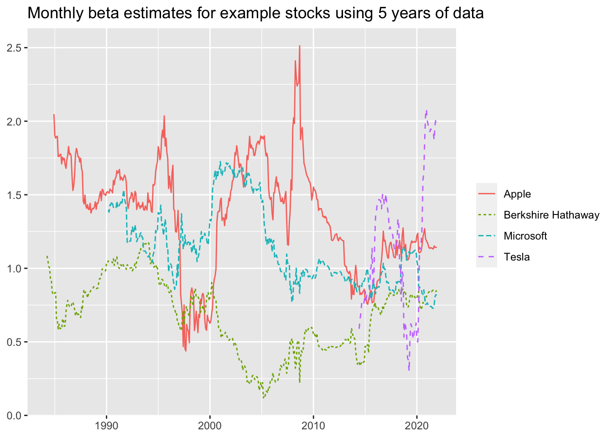
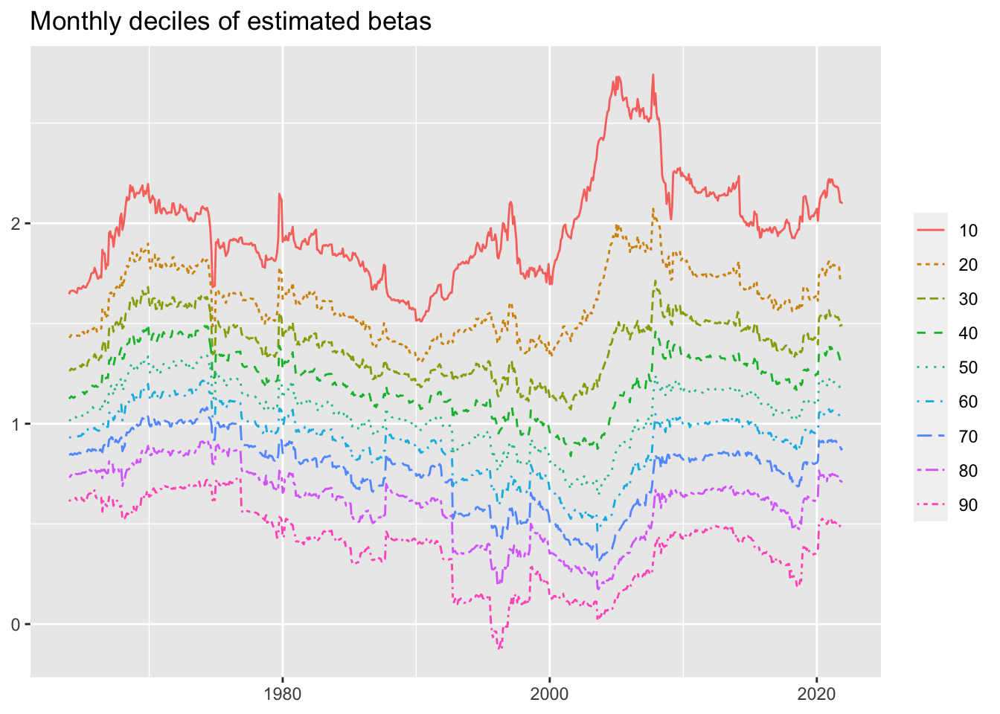

library(tidyverse)
library(DBI)
library(dbplyr)
tidy_finance <- dbConnect(
duckdb::duckdb(),
"data/tidy_finance.duckdb",
read_only = FALSE)
crsp_monthly <- tbl(tidy_finance, "crsp_monthly")
crsp_daily <- tbl(tidy_finance, "crsp_daily")
factors_ff_monthly <- tbl(tidy_finance, "factors_ff_monthly")
factors_ff_daily <- tbl(tidy_finance, "factors_ff_daily")
window <- "OVER (PARTITION BY permno ORDER BY month
RANGE BETWEEN INTERVAL 59 MONTHS PRECEDING
AND INTERVAL 0 MONTHS FOLLOWING)"
beta_sql <- sql(paste("regr_slope(ret_excess, mkt_excess)", window))
n_sql <- sql(paste("count(*)", window))
max_sql <- sql(paste("max(month)", window))
min_sql <- sql(paste("min(month)", window))
beta_monthly <-
crsp_monthly |>
left_join(factors_ff_monthly, by = "month") |>
mutate(beta_monthly = beta_sql,
n = n_sql,
max_month = max_sql,
min_month = min_sql) |>
ungroup() |>
# Check that months are consecutive
mutate(n_months = date_diff('month', min_month, max_month) + 1) |>
filter(n >= 48, n_months == n) |>
select(permno, month, beta_monthly) |>
filter(!is.na(beta_monthly)) %>%
compute()
window <- "OVER (PARTITION BY permno ORDER BY month
RANGE BETWEEN INTERVAL 2 MONTHS PRECEDING
AND INTERVAL 0 MONTHS FOLLOWING)"
beta_sql <- sql(paste("regr_slope(ret_excess, mkt_excess)", window))
n_sql <- sql(paste("count(*)", window))
beta_daily <-
crsp_daily |>
left_join(factors_ff_daily, by = "date") |>
select(permno, month, ret_excess, mkt_excess) |>
filter(!is.na(ret_excess)) |>
mutate(beta_daily = beta_sql, n = n_sql) |>
filter(n >= 50) |>
select(permno, month, beta_daily) |>
distinct() |>
compute()
dbExecute(tidy_finance, "DROP TABLE IF EXISTS beta_alt")
beta_alt <-
beta_monthly |>
full_join(beta_daily, by = c("permno", "month")) |>
arrange(permno, month) %>%
compute(name = "beta_alt", temporary = FALSE)
dbDisconnect(tidy_finance, shutdown = TRUE)4 Beta Estimation
4.1 Code to create beta
Instead of the code in the book, I used the following code to create beta (here renamed beta_alt). The code from the book (see here) takes 12 minutes and maxes out at about 37GB of RAM. The code below takes 25 seconds and peaks at about 7GB.
The code below is perhaps uglier than it needs to be, but is designed to get as close as possible to the results of the code in the book. Note that I get some differences with beta_monthly, but the same values for beta_daily.
4.2 Analysis of betas
Having created the table using the code below, I now include the analyses presented in the book, but using the database as the primary engine. Rendering this document takes less than six seconds.1
library(tidyverse)
library(DBI)
library(scales)
library(dbplyr)tidy_finance <- dbConnect(
duckdb::duckdb(),
"data/tidy_finance.duckdb",
read_only = TRUE)beta <- tbl(tidy_finance, "beta_alt")
crsp_monthly <- tbl(tidy_finance, "crsp_monthly")examples <- tribble(
~permno, ~company,
14593, "Apple",
10107, "Microsoft",
93436, "Tesla",
17778, "Berkshire Hathaway"
) |>
copy_inline(tidy_finance, df = _)beta_examples <-
beta |>
inner_join(examples, by = "permno") |>
select(permno, company, month, beta_monthly)
beta_examples |>
filter(!is.na(beta_monthly)) |>
ggplot(aes(
x = month,
y = beta_monthly,
color = company,
linetype = company)) +
geom_line() +
labs(
x = NULL, y = NULL, color = NULL, linetype = NULL,
title = "Monthly beta estimates for example stocks using 5 years of data"
)
crsp_monthly |>
left_join(beta, join_by(permno, month)) |>
filter(!is.na(beta_monthly)) |>
group_by(industry, permno) |>
summarize(beta = mean(beta_monthly, na.rm = TRUE),
.groups = "drop") |>
ggplot(aes(x = reorder(industry, beta, FUN = median), y = beta)) +
geom_boxplot() +
coord_flip() +
labs(
x = NULL, y = NULL,
title = "Firm-specific beta distributions by industry"
)beta |>
filter(!is.na(beta_monthly)) |>
group_by(month) |>
mutate(quantile = ntile(-beta_monthly, 10) * 10) |>
group_by(month, quantile) |>
summarize(x = min(beta_monthly, na.rm = TRUE), .groups = "drop") |>
filter(quantile != 100) |>
ggplot(aes(
x = month,
y = x,
color = as_factor(quantile),
linetype = as_factor(quantile)
)) +
geom_line() +
labs(
x = NULL, y = NULL, color = NULL, linetype = NULL,
title = "Monthly deciles of estimated betas",
)
beta |>
inner_join(examples, by = "permno") |>
pivot_longer(cols = c(beta_monthly, beta_daily)) |>
filter(!is.na(value)) |>
ggplot(aes(
x = month,
y = value,
color = name,
linetype = name
)) +
geom_line() +
facet_wrap(~ company, ncol = 1) +
labs(
x = NULL, y = NULL, color = NULL, linetype = NULL,
title = "Comparison of beta estimates using monthly and daily data"
)beta_long <-
crsp_monthly |>
left_join(beta, by = c("permno", "month")) |>
select(month, beta_monthly, beta_daily) |>
pivot_longer(cols = c(beta_monthly, beta_daily))
beta_long |>
group_by(month, name) |>
summarize(share = sum(as.double(!is.na(value)), na.rm = TRUE) / n(),
.groups = "drop") |>
ggplot(aes(
x = month,
y = share,
color = name,
linetype = name
)) +
geom_line() +
scale_y_continuous(labels = percent) +
labs(
x = NULL, y = NULL, color = NULL, linetype = NULL,
title = "End-of-month share of securities with beta estimates"
) +
coord_cartesian(ylim = c(0, 1))beta_long |>
select(name, value) |>
filter(!is.na(value)) |>
group_by(name) |>
summarize(
mean = mean(value),
sd = sd(value),
min = min(value),
q05 = quantile(value, 0.05),
q50 = quantile(value, 0.50),
q95 = quantile(value, 0.95),
max = max(value),
n = n()
) |>
collect()# A tibble: 2 × 9
name mean sd min q05 q50 q95 max n
<chr> <dbl> <dbl> <dbl> <dbl> <dbl> <dbl> <dbl> <dbl>
1 beta_monthly 1.10 0.711 -13.0 0.129 1.04 2.32 10.3 2163711
2 beta_daily 0.749 0.926 -43.7 -0.447 0.686 2.23 56.6 3233745dbDisconnect(tidy_finance, shutdown = TRUE)Note that code above that creates
beta_altis not run with this document.↩︎